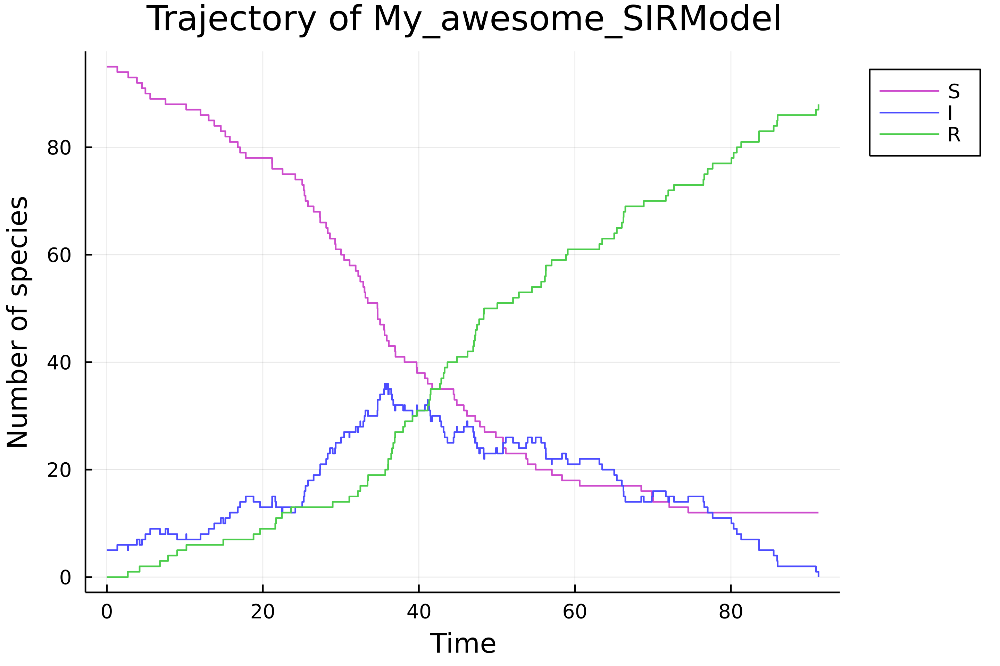

Create a model
The package offers different ways to create models based on CRNs.
Load a pre-written model
A bunch of models are already writtne within the package. If str_model::String is the name of an implemented model, then load_model(str_model) creates a variable with name str_model.
load_model("poisson")Available models are listed below.
Define a Chemical Reaction Network
Let's consider the Chemical Reaction Network of the SIR model:
`` Infection: S + I \xrightarrow{ki} 2I \ Recovery: I \xrightarrow{kr} R ``
The macro @network_model creates easily a CTMC stored in a ContinuousTimeModel variable based on this formalism.
julia> easy_sir = @network_model begin
Infection: (S + I => 2I, ki*I*S)
Recovery: (I => R, kr*I)
end "My awesome SIR"
My_awesome_SIRModel <: ContinuousTimeModel model
- variables :
* I (index = 2 in state space)
* R (index = 3 in state space)
* S (index = 1 in state space)
- parameters :
* ki (index = 1 in parameter space)
* kr (index = 2 in parameter space)
- transitions : Infection,Recovery
- observed variables :
* S (index = 1 in observed state space, index = 1 in state space)
* I (index = 2 in observed state space, index = 2 in state space)
* R (index = 3 in observed state space, index = 3 in state space)
p = [0.0, 0.0]
x0 = [0, 0, 0]
t0 = 0.0
time bound = InfIn the first reaction, ki*I*S is the reaction rate of the reaction Infection. This model is almost ready to use, we have to set the initial state and the parameters.
julia> set_param!(easy_sir, [0.0012, 0.05])
set_x0!(easy_sir, [95, 5, 0])
σ = simulate(easy_sir)
load_plots()
plot(σ)
Manually (advanced)
This page is intented to advanced uses of the package, in order to use
Based on an existing model
From scratch
When the above cases don't fit your application one can create manually a ContinuousTimeModel. Let's take a look about the signature of the constructor method:
function ContinuousTimeModel(dim_state::Int, dim_params::Int, map_var_idx::Dict{VariableModel,Int},
map_param_idx::Dict{ParameterModel,Int}, transitions::Vector{<:Transition},
p::Vector{Float64}, x0::Vector{Int}, t0::Float64,
f!::Function, isabsorbing::Function; kwargs)Let's construct an SIR model manually. First, one has to specify the dimensions of the state space and the parameter space.
dim_state_sir, dim_params_sir = 3, 2map_var_idx is a dictionary that maps each model variable (represented by a Symbol) to an index in the state space.
map_var_idx_sir = Dict(:S => 1, :I => 2, :R => 3)map_var_params is the equivalent of map_var_idx for parameters.
map_params_idx_sir = Dict(:ki => 1, :kr => 2)transitions are the transitions/reactions of the model (vector of Symbol), p, x0 and t0 are respectively the parameters, the initial state and initial time of the model.
transitions_sir = [:Infection, :Recovery]
p_sir = [0.0012, 0.05]
x0_sir = [95, 5, 0]
t0_sir = 0.0The two last arguments are functions, the first one, called f! must have the signature:
function f!(xnplus1::Vector{Int}, ptr_t::Vector{Float64}, ptr_tr::Vector{Transition},
xn::Vector{Int}, tn::Float64, p::Vector{Float64})It should return nothing. xnplus1, ptr_t and ptr_tr are vectors where the next values are stored. ptr_t is of length 1 and stores the next time value (ptr_t[1] = tn + delta_t) whereas ptr_tr stores the name of the next transition/reaction (ptr_tr[1] = :Infection for example). This function is implemented in the package as:
@everywhere function sir_f!(xnplus1::Vector{Int}, l_t::Vector{Float64}, l_tr::Vector{Transition},
xn::Vector{Int}, tn::Float64, p::Vector{Float64})
@inbounds a1 = p[1] * xn[1] * xn[2]
@inbounds a2 = p[2] * xn[2]
l_a = (a1, a2)
asum = sum(l_a)
if asum == 0.0
copyto!(xnplus1, xn)
return nothing
end
nu_1 = (-1, 1, 0)
nu_2 = (0, -1, 1)
l_nu = (nu_1, nu_2)
l_str_R = (:Infection, :Recovery)
u1 = rand()
u2 = rand()
tau = - log(u1) / asum
b_inf = 0.0
b_sup = a1
reaction = 0
for i = 1:2
if b_inf < asum*u2 < b_sup
reaction = i
break
end
@inbounds b_inf += l_a[i]
@inbounds b_sup += l_a[i+1]
end
nu = l_nu[reaction]
for i = 1:3
@inbounds xnplus1[i] = xn[i]+nu[i]
end
@inbounds l_t[1] = tn + tau
@inbounds l_tr[1] = l_str_R[reaction]
endi The second function called isaborbing must have the signature:
isabsorbing(p::Vector{Float64}, xn::Vector{Int})This function checks if the state xn is an absorbing state according to the model parametrised by p. It has to return true or false.
For a CTMC, a state is an absorbing state if the total exit rate is zero. In the case of the SIR model;
@everywhere sir_isabsorbing(p::Vector{Float64}, xn::Vector{Int}) = (p[1]*xn[1]*xn[2] + p[2]*xn[2]) === 0.0Finally one sets the observed variables and the model can be created. The following lines creates a new type TryhardSIRModel <: ContinuousTimeModel, and the core of simulation.
g_sir = [:I]
# Generates simulate method for the new model
@everywhere @eval $(BiochemNetABC.generate_code_model_type_def(:TryhardSIRModel))
@everywhere @eval $(BiochemNetABC.generate_code_model_type_constructor(:TryhardSIRModel))
@everywhere @eval $(BiochemNetABC.generate_code_simulation(:TryhardSIRModel, :sir_f!, :sir_isabsorbing))
tryhard_sir = TryhardSIRModel(dim_state_sir, dim_params_sir,
map_var_idx_sir, map_params_idx_sir,
transitions_sir, p_sir, x0_sir, t0_sir,
:sir_f!, :sir_isabsorbing; g = g_sir)
σ = simulate(tryhard_sir)List of pre-written models
load_model("poisson"): Poisson processload_model("ER"): Michaelis-Menten kinetics (Enzymatic Reactions)load_model("SIR"): Susceptible-Infected-Removedload_model("doping_3way_oscillator"): Three-way oscillator with doping reactionsload_model("repressilator"): A repressilator model